Бизнес-процессы помогают задать правильную последовательность движения заказов по статусам и назначить ответственных за этапы.
Используя инструмент Бизнес-процессов, вы можете:
- настроить правильную воронку продаж — заказы будут созданы в нужных статусах и не получится пропустить важные этапы при работе с ними;
- упростить работу с многоканальными продажами — заказы с сайта, маркетплейсов, мессенджеров, соцсетей и других каналов будут обрабатываться по своим правилам нужными сотрудниками, отделами и ролями;
- дать сотрудникам четкие рабочие инструкции — им не придется думать, что следует сделать с документом дальше, а значит, они не ошибутся; система отобразит только доступные переходы;
- улучшить контроль и прозрачность процессов — руководители получат дополнительный инструмент контроля и согласования сделок.
Бизнес-процессы доступны для всех тарифов бесплатно и без ограничений. Это временное предложение, позже инструмент станет платным.
Создание бизнес-процесса
Создание, просмотр и редактирование бизнес-процессов доступно только администраторам аккаунта.
Создать бизнес-процесс можно в разделе Настройки → Бизнес-процессы и в разделе Продажи → Заказы покупателей. Рассмотрим оба способа.
Чтобы создать новый бизнес-процесс в разделе Настройки → Бизнес-процессы:
- Перейдите в меню пользователя и выберите Настройки → Бизнес-процессы.
- Нажмите +Создать бизнес-процесс.
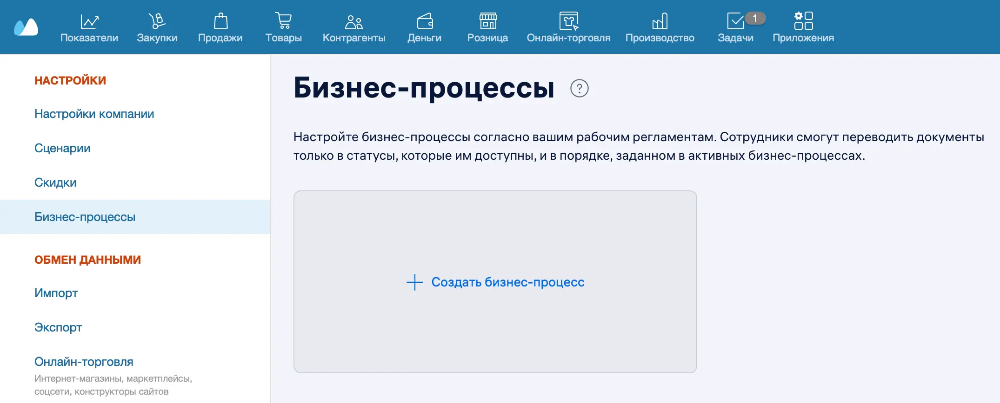
- Заполните название и добавьте описание бизнес-процесса. Лучше сделать подробное описание.
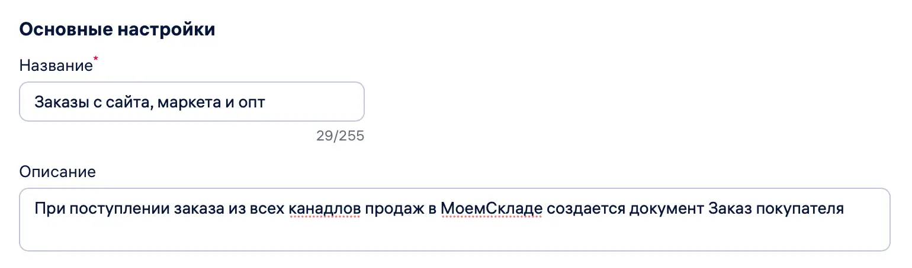
- Укажите статусы, при которых необходимо создать документ. Можно добавить несколько статусов (+Добавить еще).
- Настройте бизнес-процесс с помощью этапов перехода между статусами:
- Статус, с которого начинается этап — задайте начальные статусы этапа при редактировании документа. Можно выбрать статус Без статуса, если есть документы, которые еще не имеют статуса.
- Статус, в который документ может быть переведен — задайте финальные статусы этапа, в которые можно будет перевести заданный документ при его редактировании.
- Для каждого статуса укажите сотрудников, которые могут создавать документы и менять статусы. По умолчанию доступно для всех сотрудников аккаунта. Чтобы ограничить доступ, нажмите Все сотрудники. В открывшемся окне отключите Выбраны все сотрудники аккаунта и отметьте только тех сотрудников, которые могут создать документы. Нажмите Выбрать.
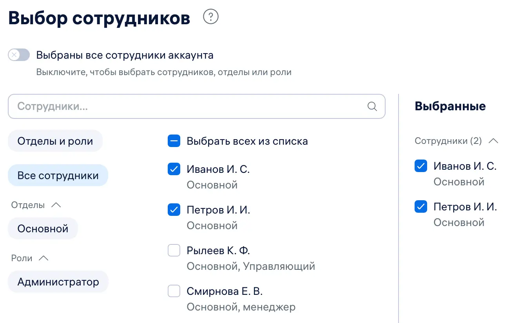
- Проверьте список невыбранных статусов, чтобы не пропустить нужные статусы и связанные с ними процессы. Если статус не выбран, он не участвует в бизнес-процессе и недоступен при работе с документами.
- Нажмите на кнопку Создать.
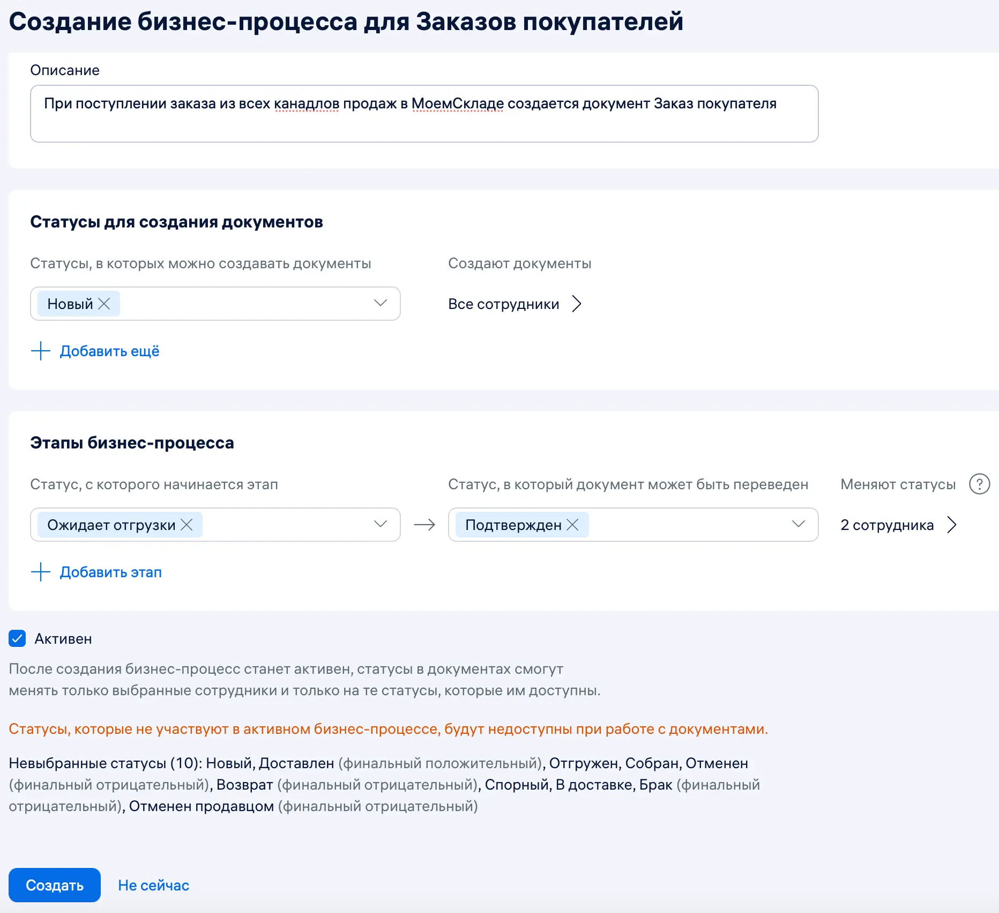
Чтобы создать новый бизнес-процесс в разделе Продажи → Заказы покупателей:
- Перейдите в раздел Продажи → Заказы покупателей.
- Нажмите на кнопку Бизнес-процессы.
- В открывшемся окне заполните поля как описано выше.
- Нажмите на кнопку Сохранить.
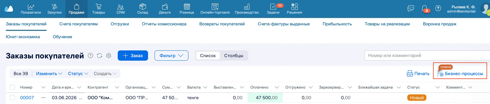
По умолчанию создается активный бизнес-процесс, статусы в документах могут менять только выбранные сотрудники и только на те статусы, которые им доступны. Чтобы временно отключить бизнес-процесс, снимите галочку Активен.
Можно создать только один бизнес-процесс для Заказа покупателя. Настроить работу с несколькими каналами продаж вы можете в рамках одного бизнес-процесса — просто задайте нужные переходы и выберите сотрудников, отделы и роли. Этапы, статусы и ответственные могут дублироваться.
Бизнес-процесс влияет только на работу с документом Заказ покупателя в МоемСкладе. Он не влияет на работу сценариев, интеграций, мобильных приложений, кассы и API.
Редактирование бизнес-процесса
Чтобы отредактировать, удалить или изменить активность бизнес-процесса:
- Перейдите в раздел Бизнес-процессы.
- Выберите нужный бизнес-процесс.
- Чтобы Удалить или включить/выключить настройку Активен, выберите действие и подтвердите его.
- Чтобы отредактировать бизнес-процесс, нажмите Редактировать, внесите и сохраните изменения.
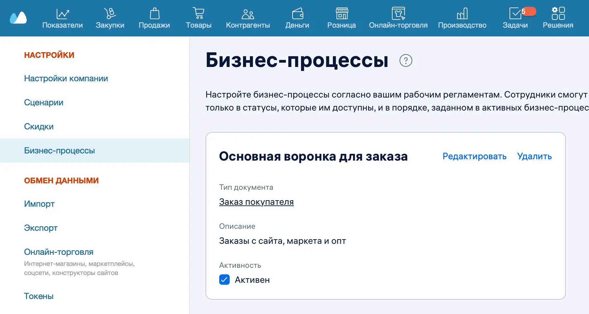
Редактировать, изменить настройку активности и удалить бизнес-процесс можно также в разделе Продажи → Заказы покупателей. Для этого:
- Перейдите в раздел Продажи → Заказы покупателей.
- Нажмите на кнопку Бизнес-процессы.
- В открывшемся окне внесите нужные изменения. Если необходимо включить/выключить настройку Активен или Удалить бизнес-процесс, выберите действие и подтвердите его.
- Нажмите на кнопку Сохранить.
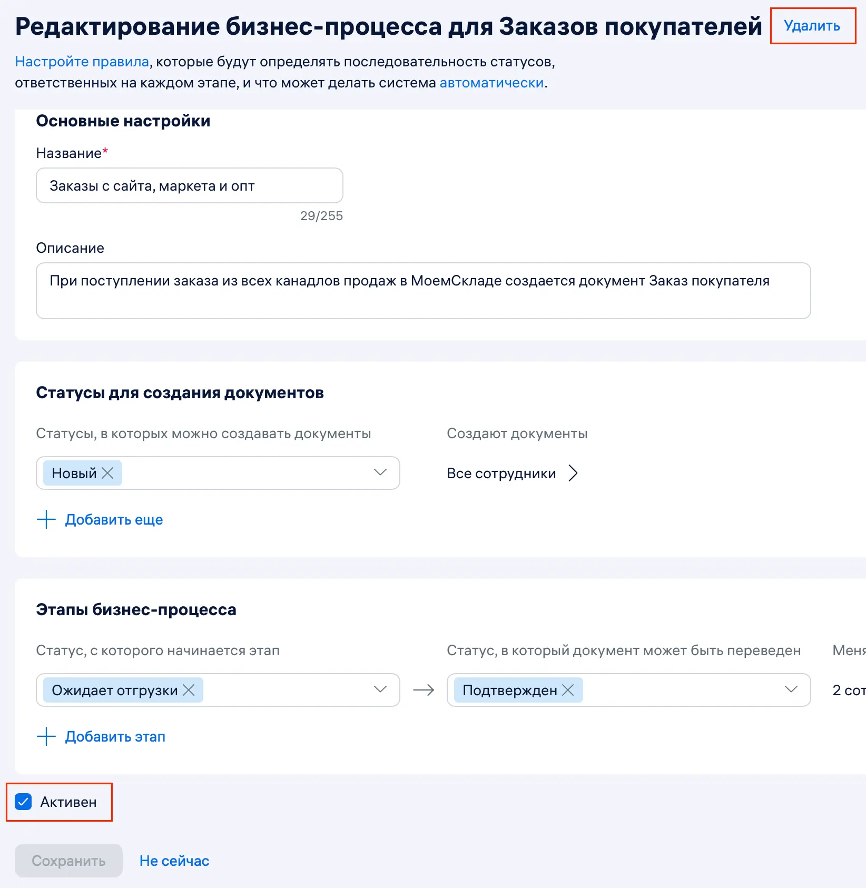
Примеры бизнес-процессов
Разделить работу с заказом для разных каналов продаж
Такой процесс необходим, если вы работаете сразу с несколькими каналами продаж: принимаете заявки на сайте, в маркетплейсе, в соцсетях и мессенджерах, ведете оптовые и розничные продажи. У каждого канала свой процесс движения заказа по воронке продаж, свои регламенты обработки заказов. Разными каналами продаж занимаются, как правило, разные отделы, роли или сотрудники.
В первую очередь изучите, как сейчас ведется работа с заказом в разных каналах продаж. Для примера рассмотрим процесс работы с заказами с сайта.
- Покупатель собирает корзину.
- Заказ попадает в МойСклад со статусом Новый (сайт).
- Менеджер обрабатывает заказ: проверяет состав, связывается с клиентом для уточнения адреса и срока доставки, в случае необходимости отправляет запрос в нужный отдел для дозаказа части товаров у поставщика. Заказ может принять статус В работе (сайт).
- Менеджер переводит заказ в один из возможных статусов: Ожидает подтверждения, Отменен, Ожидает поступления.
- Если все идет хорошо, заказ движется дальше по воронке продаж. На следующем этапе заказ может получить статус: Подтвержден, Ожидает сборки (сайт), Собран (сайт) или Отгружен (сайт).
- После сборки и отгрузки заказ переходит в доставку. На этом этапе может быть несколько вариантов способа доставки: Курьер, Самовывоз, Почта России, СДЭК.
- После доставки статус заказа становится Завершен. На этом работа над заказом заканчивается.
Описанный выше процесс можно реализовать с помощью бизнес-процесса:
- Создайте новый бизнес-процесс, в этапах которого будут учитываться правильные переходы для каждого канала продаж. Например, для продаж с сайта бизнес-процесс будет выглядеть следующим образом.
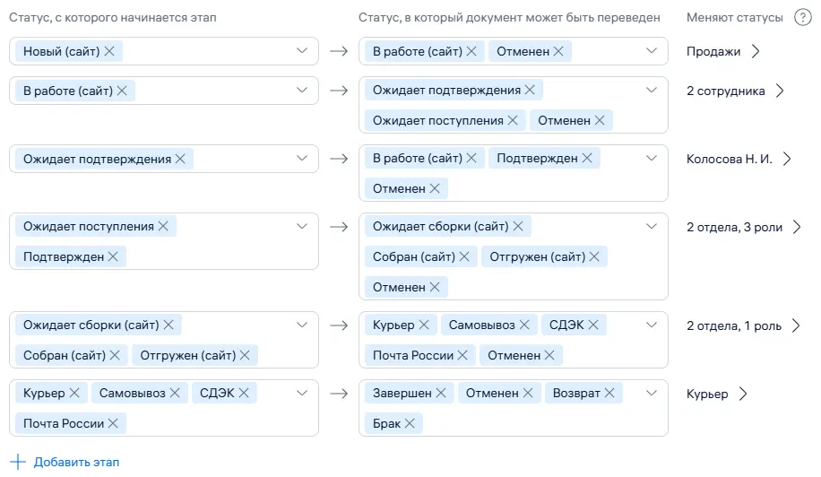
- Улучшите ваши процессы дополнительными инструментами, которые помогут автоматизировать часть работы сотрудников и добавят прозрачности в работу с этапами. Например:
- Автоматические сценарии заберут часть ручной работы на себя, сэкономят время и ресурсы, а также избавят сотрудников от ошибок.
- Задачи добавят прозрачности процессам — у каждого сотрудника появится чек-лист того, что он должен сделать за день и в каком порядке. Таким образом, никто не пропустит важный звонок с клиентом или не забудет вовремя собрать заказ.
- Лента событий помогает вести актуальную информацию о клиентах и поставщиках, фиксировать все переписки и договоренности, а также позволяет сотрудникам общаться внутри единой системы.
- Решения расширяют возможности МоегоСклада и помогают адаптировать сервис под потребности бизнеса.
Согласовать размер повышенной скидки с руководителем
На примере компании из предыдущего пункта рассмотрим, как настроить процесс согласования скидки на заказ, если она должна быть согласована с руководителем. Для этого:
- Настройте бизнес-процесс, в котором будут такие переходы:
- Менеджер переводит нужный заказ из статуса В работе (сайт) в статус Ожидает подтверждения.
- Далее руководитель проверяет условия заказа, согласовывает или отклоняет заказ. Заказ переходит из статуса Ожидает подтверждения в статус Подтвержден или обратно в статус В работе (сайт).
- Менеджер перемещает заказ из статуса Подтвержден дальше по воронке продаж или корректирует и возвращает заказ на согласование.
- Расширьте данный процесс с помощью автоматических сценариев:
- Используйте готовый шаблон сценария, адаптируя его под себя: измените владельца-сотрудника документа на руководителя. Если у менеджера настроены права только на редактирование своих заказов, он лишится возможности изменить данный заказ, пока он снова не станет владельцем заказа.
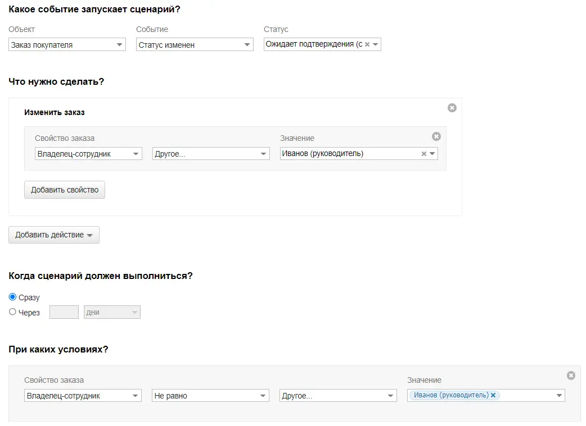
- На руководителя также можно создавать задачу на подтверждение заказа. Для этого воспользуетесь шаблоном, адаптировав его под свой процесс.
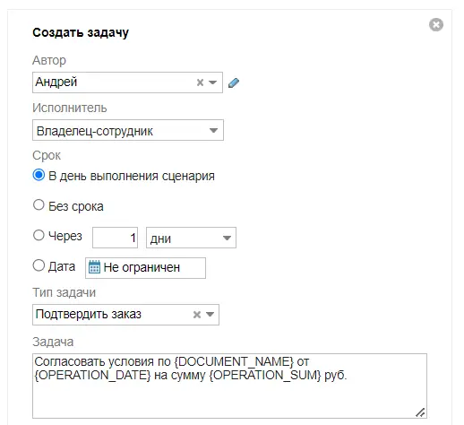
В рамках задачи руководитель сможет написать комментарии для менеджера. Далее в этой задаче будет вся переписка по согласованию.
Когда руководитель подтвердит или отклонит процесс, заказ снова вернется к менеджеру на основании настроенного сценария.
Проверить коммерческое предложение или договор перед отправкой контрагенту
Бизнес-процесс настраивается аналогично предыдущему примеру, но в этапах указываются иные переходы между статусами.
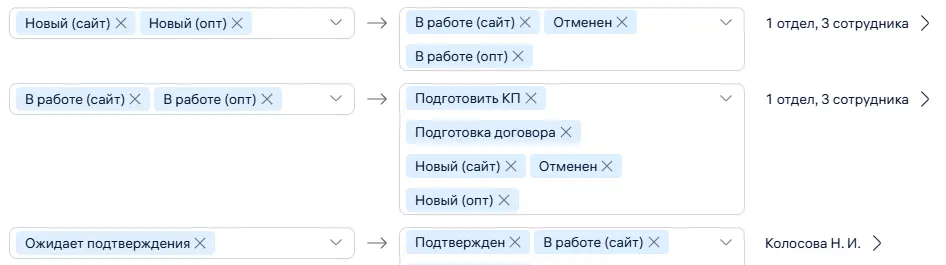
Бизнес-процесс можно дополнить сценарием. Например, можно создать сценарий Смена ответственного сотрудника по заказу, Постановка задачи руководителю или Отправка уведомления руководителю.
Уточнить наличие или характеристики товара у работника склада
Если требуется взаимодействие между разными отделами и сотрудниками в рамках одного заказа, процесс можно реализовать двумя способами:
- с использованием отдельного статуса, за который ответственен работник склада — если заказ перевели на данный статус, значит требуется уточнение;
- через автоматическую постановку задач или отправку уведомлений работнику склада с помощью сценариев.
Настройте сценарий для отправки уведомления.
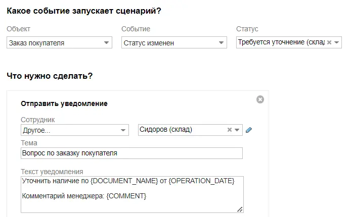
При исполнении сценария работник склада получает уведомление.
Заказать товары по недостающим позициям в заказе
Ситуация как в предыдущем пункте. При настройке бизнес-процесса можно указать:
- Статус, с которого начинается этап — В работе (сайт);
- Статус, в который документ может быть переведен — Ожидает поступления (сайт), Отменен (сайт).
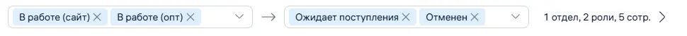
Настройте сценарий для автоматического создания связанного Заказа поставщику и отправки уведомления при переводе Заказа покупателя в определенный статус.
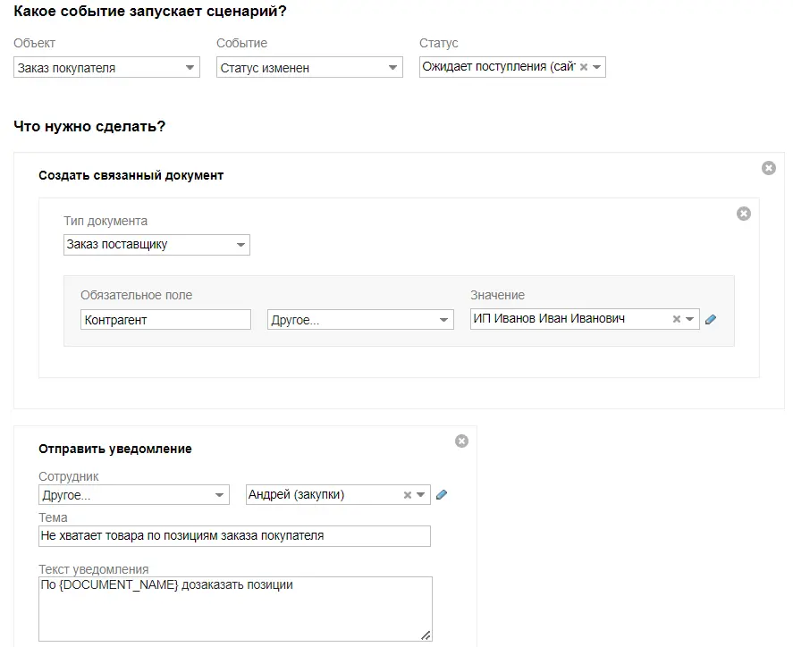
Проверить поступление оплаты через бухгалтерию
Аналогично пункту с проверкой коммерческого предложения. Требуется, в первую очередь, если заказ не может быть собран или отгружен, пока бухгалтер не подтвердит факт оплаты.
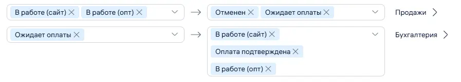
В этом случае можно настроить сценарий, который будет создавать сразу связанный Счет покупателю и назначать задачу на бухгалтера по проверке поступления оплаты со сроком через 3 дня.
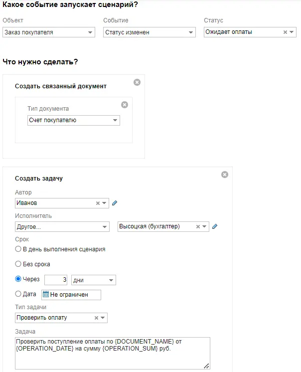
Можно расширить данный процесс с помощью дополнительных сценариев: Отправка уведомления после успешной оплаты счета и Перевод счета в определенный статус после успешной оплаты.
Передать заказ на сборку
Процесс схож с заказом недостающих товаров. В нем тоже идет взаимодействие между сотрудниками разных отделов, например, менеджером и работником склада.
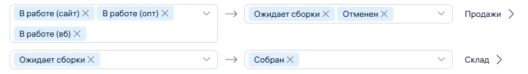
Бизнес-процесс можно расширить дополнительным уведомлением о готовности заказа к сборке и созданием задачи на сборку.
Зафиксировать результат сделки
Требуется для ограничения работы с заказами, переведенными в финальный положительный статус. Процесс поможет исключить ошибки и точно начислить премии сотрудникам. Например, поможет избежать удвоения бонусов по одной сделке.
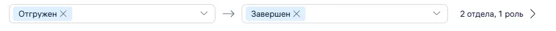